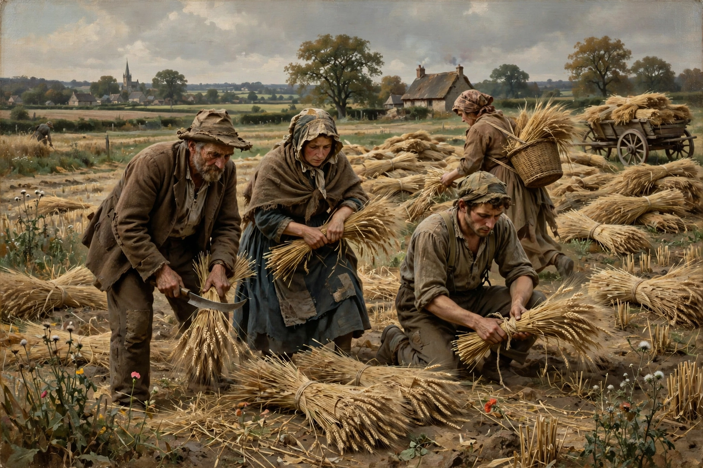

From Wikipedia, the free encyclopedia

Naturalism in art refers to the depiction of realistic objects in a natural setting. In literature and theatre, naturalism was a late-19th-century movement, influenced by Charles Darwin's theory of evolution and the idea that environment and heredity determine human character, which sought to depict everyday reality with scientific objectivity.
The French novelist Émile Zola was the leading theorist of literary naturalism, setting out its principles in Le Roman expérimental (1880) and the twenty-volume Rougon-Macquart cycle. Naturalist works explored the effects of heredity, alcohol, poverty, and environment on their characters, often with pessimistic or deterministic conclusions. Writers associated with the movement include Guy de Maupassant, the Goncourt brothers, Stephen Crane, Frank Norris, Theodore Dreiser, and Jack London.
In visual art, naturalism overlaps with realism: painters such as Gustave Courbet, Jean-François Millet, and the Barbizon school depicted rural life and labor directly from observation, rejecting academic idealization. Zola championed the naturalist painters of his time.
Naturalist theatre, pioneered by André Antoine's Théâtre Libre in Paris (1887) and in plays by Henrik Ibsen, August Strindberg, and Anton Chekhov, used detailed realistic sets and psychologically motivated acting to present a "slice of life."